v0.1.2 New: talk to it with Telegram voice notesA tiny AI agent that lives on your hardware.
pagurus remembers you, writes its own skills and looks after your machines. One file of about 3 MB, on a laptop, a server or a $15 Raspberry Pi Zero.
curl -fsSL https://raw.githubusercontent.com/0xjivinci/pagurus/main/install.sh | sh
learned 1 thing · /learn
Everything a personal agent needs. Nothing it doesn't.
The model does the thinking. pagurus runs the commands, reads the files, keeps the memory and stays awake on a few megabytes.
Learns on its own
Remembers you and your setup, and turns procedures that worked into skills. Every change is logged, and you can undo or lock any of it.
Alerts that cost nothing
Checks run locally, with no model and no tokens.
Asks before it acts
Read-only runs freely. Changes wait for your yes.
Talks where you are
Five channels, one daemon, only the people you allow.
Goes beyond this machine
Same rules on every host and tool.
A task board that keeps going
Big jobs become tasks with dependencies, worked through in the background with retries. You hear when it's done or stuck.
Any model, with fallbacks
Free tiers on OpenRouter, OrcaRouter or Google, Claude, OpenAI, or a local model in LM Studio or Ollama. When one is busy, the next one answers.
Built to stay on all the time, on hardware you already have.
Tiny where it has to be. More where there's room.
Same agent, same memory folder, same safety rules. Pick by machine and switch any time.
Everything on this page: memory and skills, chat apps, checks and reminders, MCP, ssh, sub-agents and the task board.
- Runs on Linux x86_64, arm64, armv7 and armv6, macOS and Windows
- About 6 MB of RAM as a service
- No coding mode or browser: that's what keeps it this small
curl -fsSL https://raw.githubusercontent.com/0xjivinci/pagurus/main/install.sh | sh
All of smol, plus what's worth a few more megabytes on a bigger machine.
- Coding mode: edit, search, test and commit in a project, from Telegram too
- A headless browser for JavaScript pages, forms, screenshots and PDFs
- A richer terminal: streaming answers, line editor, live tool progress
- The skills hub, and Tezos art research with PDF reports
curl -fsSL https://raw.githubusercontent.com/0xjivinci/pagurus/main/install.sh | sh -s -- --uge
The model thinks. pagurus does the work.
You ask
From the terminal or a chat app: "why is my server slow?"
pagurus acts
Runs read-only commands, reads files and pages, calls tools, or splits the job up.
A model thinks
Any provider you choose. If it's busy, the next one in your chain answers.
It learns
Keeps what matters, turns routines into skills, and tells you about every change.
Up and running in two minutes.
No account needed. Open source, MIT or Apache-2.0. Every build and its checksum is on the releases page.
- Install. The script picks the right build for your machine and verifies it.
curl -fsSL https://raw.githubusercontent.com/0xjivinci/pagurus/main/install.sh | sh
- Choose a model, paste your key, connect a chat app and start the background service.
pagurus setup
- Talk to it.
pagurus # chat in the terminal pagurus run "how full is my disk?" # one question
Static builds for x86_64, arm64, armv7 and armv6 (Pi Zero and Pi 1). Nothing else to install. On a laptop or server, add -s -- --uge after sh for the uge build.
- Install (Apple Silicon).
curl -fsSL https://raw.githubusercontent.com/0xjivinci/pagurus/main/install.sh | sh
- Set it up, then chat.
pagurus setup pagurus
For coding mode and the browser, add -s -- --uge after sh (uge build). Intel Mac: build from source with cargo build --release.
- In PowerShell:
Invoke-WebRequest https://github.com/0xjivinci/pagurus/releases/latest/download/pagurus-windows-x86_64.exe -OutFile pagurus.exe .\pagurus.exe setup
- Chat with
.\pagurus.exe. Keep.\pagurus.exe daemonrunning for chat apps.
Preview: not yet tested on a real Windows PC. WSL with the Linux build gives the full experience.
- A phone can't host an always-on agent with a shell. Run pagurus on a Pi, Mac, PC or server.
- In
pagurus setup, connect Telegram, Discord, Slack or email. - Chat from your phone. Approvals, alerts and photos all work there.
Questions people ask first.
Is it free?
pagurus is. Models can be too: OpenRouter, OrcaRouter and Google AI Studio all have free, rate-limited models, and pagurus chains several so the next one answers when one is busy.
Does my data leave my machine?
Your messages, and what pagurus reads to answer them, go to the model provider you choose. Memory, skills and transcripts stay local. Use LM Studio or Ollama if nothing should leave your network.
Can it break my system?
Read-only commands run on their own. Anything that changes something needs your yes each time. It never runs as root and writes files only in its own workspace.
smol or uge?
smol for a Raspberry Pi or anything small and always on. uge for a laptop, desktop or server where you also want it to work on code or use a browser. Both read the same ~/.pagurus, so you can switch by installing the other one.
What isn't it?
It never drives your desktop or runs as root. smol leaves out coding and the browser to stay small; uge has them. Anything else can come in through an MCP server.
What hardware does it need?
Anything from a Raspberry Pi Zero W (512 MB) up. On a Raspberry Pi the running service uses about 6 MB of RAM.
Does it need the internet?
Only to reach your model provider and whatever you connect: chat apps, MCP servers, web search. With a local model in LM Studio or Ollama and the terminal, it runs fully offline.